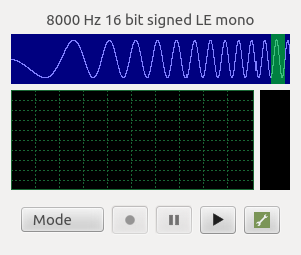

Spectrum Example
Analyzing a raw audio stream using the FFTReal library.
Spectrum demonstrates how the Qt Multimedia module can be used to analyze an audio stream while recording it, and also play the recorded stream.

Because Qt Multimedia allows the application to access the raw audio stream, the data can either be inspected or modified by the application. The Spectrum Analyzer example displays three pieces of information while audio is being either captured or played back:
- Information about the raw audio stream, shown in the uppermost widget:
- The amount of data currently in the buffer, shown in blue
- The segment of data which was most recently analysed to compute the frequency spectrum, shown in green
- The raw audio waveform, shown in white and scrolling from right to left
- A representation of the frequency spectrum, shown at the lower left
- The current RMS level of the audio stream, and the recent 'high watermark' level, shown at the lower right
Spectrum analysis is performed by calculating the Fast Fourier Transform (FFT) of a segment of audio data. An open-source library, FFTReal is used to compute the transform. FFTReal is available under the GNU Library General Public License 2.0 or later.
Running the Example
To run the example from Qt Creator, open the Welcome mode and select the example from Examples. For more information, visit Building and Running an Example.